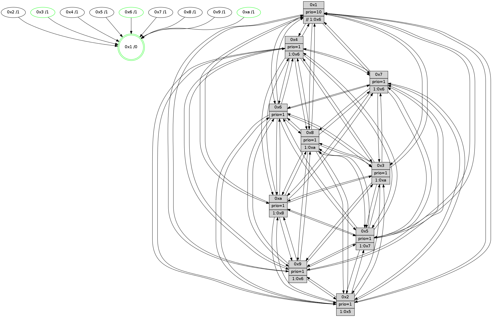

>> << IDX [start] -100 -25 -5 +0 +5 +25 +100 [1125.09149003]
 Previous packets
----------------------------------------------------------------------
1120.362705 beacon01(faad) #0 coord=01,02,03,04,05,06,07,0a,09,08 cycle=688.0ms assoc
-- color-indic=1 64 3c 1d
1120.372686 beacon02(faad) #0 coord=01,02,03,04,05,06,07,0a,09,08 cycle=688.0ms assoc 64 af 2c
1120.382686 beacon03(faad) #0 coord=01,02,03,04,05,06,07,0a,09,08 cycle=688.0ms assoc 64 d5 61
1120.392688 beacon04(faad) #0 coord=01,02,03,04,05,06,07,0a,09,08 cycle=688.0ms assoc 64 a2 8b
1120.402687 beacon05(faad) #0 coord=01,02,03,04,05,06,07,0a,09,08 cycle=688.0ms assoc 64 d8 c6
1120.412689 beacon06(faad) #0 coord=01,02,03,04,05,06,07,0a,09,08 cycle=688.0ms assoc 64 56 11
1120.422688 beacon07(faad) #0 coord=01,02,03,04,05,06,07,0a,09,08 cycle=688.0ms assoc 64 2c 5c
1120.432694 beacon0a(faad) #0 coord=01,02,03,04,05,06,07,0a,09,08 cycle=688.0ms assoc 64 5d 57
1120.442692 beacon09(faad) #0 coord=01,02,03,04,05,06,07,0a,09,08 cycle=688.0ms assoc 64 d3 80
1120.452694 beacon08(faad) #0 coord=01,02,03,04,05,06,07,0a,09,08 cycle=688.0ms assoc 64 a9 cd
1120.464820 [Hello(7): seq=715 sym=2,3,5,6,4,8,9,10,1 sysInfo=hasWarning stat=2:2,12,4,0/3:3,9,3,15/5:8,0,0,1/6:0,12,1,9/4:8,13,4,1/8:0,5,10,1/9:12,1,4,1/10:4,15,5,4/1:4,15,6,0]
1120.467527 [Hello(4): seq=715 sym=5,7,6,2,3,9,8,10,1 sysInfo= stat=5:5,12,11,14/7:5,3,9,9/6:9,7,12,12/2:10,5,5,13/3:5,3,12,11/9:4,13,1,11/8:5,0,15,5/10:3,0,4,12/1:12,6,6,1]
1120.472505 [STC(1) #0.169 tree-change,inconsistent-stability,stable,to-color d=0]
1120.474791 [Color(1) seq=396 @0:0 prio=10 >>1.@6,1.@7,1.@8]
1120.476664 [Hello(10): seq=648 sym=6,2,3,8,7,5,9,4,1 sysInfo=hasWarning stat=6:1,10,14,6/2:1,12,2,10/3:1,1,4,11/8:8,12,6,1/7:3,8,14,6/5:7,12,11,14/9:12,15,15,2/4:0,0,0,0/1:5,7,0,1]
1120.481555 [Hello(9): seq=659 sym=2,5,3,4,7,6,8,10,1 sysInfo=hasWarning stat=2:15,6,9,7/5:7,11,8,5/3:2,6,14,15/4:3,8,0,1/7:7,10,1,0/6:14,1,4,11/8:0,11,11,3/10:4,3,15,3/1:2,5,6,1]
----------------------------------------------------------------------
1121.150835 beacon01(faad) #0 coord=01,02,03,04,05,06,07,0a,09,08 cycle=688.0ms assoc
-- color-indic=1 64 9b 6d
1121.160819 beacon02(faad) #0 coord=01,02,03,04,05,06,07,0a,09,08 cycle=688.0ms assoc 64 08 5c
1121.170818 beacon03(faad) #0 coord=01,02,03,04,05,06,07,0a,09,08 cycle=688.0ms assoc 64 72 11
1121.180819 beacon04(faad) #0 coord=01,02,03,04,05,06,07,0a,09,08 cycle=688.0ms assoc 64 05 fb
1121.190817 beacon05(faad) #0 coord=01,02,03,04,05,06,07,0a,09,08 cycle=688.0ms assoc 64 7f b6
1121.200818 beacon06(faad) #0 coord=01,02,03,04,05,06,07,0a,09,08 cycle=688.0ms assoc 64 f1 61
1121.210820 beacon07(faad) #0 coord=01,02,03,04,05,06,07,0a,09,08 cycle=688.0ms assoc 64 8b 2c
1121.220822 beacon0a(faad) #0 coord=01,02,03,04,05,06,07,0a,09,08 cycle=688.0ms assoc 64 fa 27
1121.230823 beacon09(faad) #0 coord=01,02,03,04,05,06,07,0a,09,08 cycle=688.0ms assoc 64 74 f0
1121.240826 beacon08(faad) #0 coord=01,02,03,04,05,06,07,0a,09,08 cycle=688.0ms assoc 64 0e bd
1121.251725 [STC(7)->1 #0.169 tree-change,inconsistent-stability,to-color d=1]
1121.253005 [STC(8)->1 #0.169 tree-change,inconsistent-stability,to-color d=1]
1121.254453 [Hello(2): seq=712 sym=4,5,7,6,3,9,8,10,1 sysInfo=hasWarning stat=4:6,11,2,10/5:1,4,8,0/7:15,14,0,13/6:11,12,9,11/3:3,9,8,8/9:2,8,8,6/8:14,11,2,10/10:11,8,13,10/1:0,1,1,0]
1121.257284 [STC(2)->1 #0.169 to-color d=1]
1121.258775 [Hello(6): seq=716 sym=2,3,5,4,7,9,8,10,1 sysInfo=hasWarning stat=2:3,11,14,7/3:4,7,12,11/5:2,8,13,0/4:12,2,6,5/7:12,0,15,11/9:2,0,15,7/8:14,13,8,4/10:6,7,2,12/1:14,11,7,1]
1121.261796 [Hello(3): seq=716 sym=1,7,6,2,4,8,9,10,5 sysInfo=hasWarning stat=1:6,7,5,0/7:13,1,7,11/6:11,6,5,5/2:0,12,10,1/4:12,9,12,11/8:10,6,4,3/9:11,8,12,13/10:0,10,9,3/5:5,8,2,14]
1121.265786 [Hello(1): seq=625 sym=4,2,9,5,10,3,8,6,7 sysInfo=coloring-mode-on,ColoringModeRequestCalled stat=4:6,11,15,4/2:8,9,14,1/9:3,2,13,7/5:6,9,6,7/10:11,11,2,5/3:4,15,7,6/8:4,8,12,2/6:4,5,15,13/7:6,4,13,14]
1121.270173 [STC(3)->1 #0.169 tree-change,inconsistent-stability,stable,to-color d=1]
1121.272139 [Color(3) seq=345 @0:0 prio=1 >1.@a]
1121.274022 [Color(10) seq=305 @0:0 prio=1 >1.@8]
1121.276201 [Hello(5): seq=716 sym=7,6,4,3,1,9,8,10,2 sysInfo=hasWarning stat=7:14,14,2,12/6:15,10,3,2/4:13,12,12,12/3:14,6,10,13/1:0,2,10,1/9:1,0,11,9/8:11,7,8,1/10:4,8,9,7/2:14,1,11,5]
1121.279322 [STC(5)->1 #0.169 tree-change,inconsistent-stability,to-color d=1]
1121.283420 [STC(6)->1 #0.169 tree-change,inconsistent-stability,stable,to-color d=1]
1121.287290 [Color(6) seq=348 @0:0 prio=1]
----------------------------------------------------------------------
1121.938967 beacon01(faad) #0 coord=01,02,03,04,05,06,07,0a,09,08 cycle=688.0ms assoc
-- color-indic=1 64 27 68
1121.948951 beacon02(faad) #0 coord=01,02,03,04,05,06,07,0a,09,08 cycle=688.0ms assoc 64 b4 59
1121.958951 beacon03(faad) #0 coord=01,02,03,04,05,06,07,0a,09,08 cycle=688.0ms assoc 64 ce 14
1121.968951 beacon04(faad) #0 coord=01,02,03,04,05,06,07,0a,09,08 cycle=688.0ms assoc 64 b9 fe
1121.978950 beacon05(faad) #0 coord=01,02,03,04,05,06,07,0a,09,08 cycle=688.0ms assoc 64 c3 b3
1121.988950 beacon06(faad) #0 coord=01,02,03,04,05,06,07,0a,09,08 cycle=688.0ms assoc 64 4d 64
1121.998949 beacon07(faad) #0 coord=01,02,03,04,05,06,07,0a,09,08 cycle=688.0ms assoc 64 37 29
1122.008954 beacon0a(faad) #0 coord=01,02,03,04,05,06,07,0a,09,08 cycle=688.0ms assoc 64 46 22
1122.018955 beacon09(faad) #0 coord=01,02,03,04,05,06,07,0a,09,08 cycle=688.0ms assoc 64 c8 f5
1122.028956 beacon08(faad) #0 coord=01,02,03,04,05,06,07,0a,09,08 cycle=688.0ms assoc 64 b2 b8
1122.040121 [Hello(7): seq=716 sym=2,3,5,6,4,8,9,10,1 sysInfo=hasWarning stat=2:3,12,5,0/3:4,10,4,15/5:9,0,1,1/6:1,13,2,9/4:9,13,4,1/8:0,5,11,1/9:13,1,4,1/10:5,0,5,4/1:5,0,7,0]
1122.042867 [Hello(10): seq=649 sym=6,2,3,8,7,5,9,4,1 sysInfo=hasWarning stat=6:1,11,15,6/2:2,12,2,10/3:1,1,4,11/8:8,12,7,1/7:3,8,15,6/5:8,12,12,14/9:13,15,15,2/4:0,0,0,0/1:5,7,0,1]
1122.045597 [Color(1) seq=397 @0:0 prio=10 >>1.@6,1.@7,1.@8]
1122.047884 [Hello(8): seq=660 sym=5,2,3,4,9,6,7,10,1 asym= sysInfo=hasWarning stat=5:0,6,1,0/2:10,2,13,9/3:3,13,1,15/4:3,15,6,10/9:4,7,2,3/6:1,11,15,13/7:2,12,15,4/10:4,2,5,3/1:5,15,6,0]
1122.051091 [Hello(4): seq=716 sym=5,7,6,2,3,9,8,10,1 sysInfo= stat=5:6,12,12,14/7:5,3,9,9/6:10,8,13,12/2:10,5,5,13/3:6,4,13,11/9:5,13,1,11/8:5,0,15,5/10:4,1,4,12/1:13,7,7,1]
1122.055750 [Hello(9): seq=660 sym=2,5,3,4,7,6,8,10,1 sysInfo=hasWarning stat=2:0,6,9,7/5:8,11,9,5/3:3,7,15,15/4:3,8,1,1/7:7,10,2,0/6:15,2,5,11/8:0,11,12,3/10:4,4,15,3/1:3,5,6,1]
----------------------------------------------------------------------
1122.727097 beacon01(faad) #0 coord=01,02,03,04,05,06,07,0a,09,08 cycle=688.0ms assoc
-- color-indic=1 64 e3 66
1122.737079 beacon02(faad) #0 coord=01,02,03,04,05,06,07,0a,09,08 cycle=688.0ms assoc 64 70 57
1122.747078 beacon03(faad) #0 coord=01,02,03,04,05,06,07,0a,09,08 cycle=688.0ms assoc 64 0a 1a
1122.757079 beacon04(faad) #0 coord=01,02,03,04,05,06,07,0a,09,08 cycle=688.0ms assoc 64 7d f0
1122.767081 beacon05(faad) #0 coord=01,02,03,04,05,06,07,0a,09,08 cycle=688.0ms assoc 64 07 bd
1122.777080 beacon06(faad) #0 coord=01,02,03,04,05,06,07,0a,09,08 cycle=688.0ms assoc 64 89 6a
1122.787079 beacon07(faad) #0 coord=01,02,03,04,05,06,07,0a,09,08 cycle=688.0ms assoc 64 f3 27
1122.797085 beacon0a(faad) #0 coord=01,02,03,04,05,06,07,0a,09,08 cycle=688.0ms assoc 64 82 2c
1122.807085 beacon09(faad) #0 coord=01,02,03,04,05,06,07,0a,09,08 cycle=688.0ms assoc 64 0c fb
1122.817085 beacon08(faad) #0 coord=01,02,03,04,05,06,07,0a,09,08 cycle=688.0ms assoc 64 76 b6
1122.828863 [Hello(5): seq=717 sym=7,6,4,3,1,9,8,10,2 sysInfo=hasWarning stat=7:15,14,3,12/6:15,11,4,2/4:14,12,12,12/3:14,6,10,13/1:0,3,10,1/9:2,0,11,9/8:12,7,8,1/10:5,8,9,7/2:14,1,11,5]
1122.832919 [Color(10) seq=306 @0:0 prio=1 >1.@8]
1122.837734 [Hello(6): seq=717 sym=2,3,5,4,7,9,8,10,1 sysInfo=hasWarning stat=2:4,11,14,7/3:4,7,12,11/5:2,8,13,0/4:13,2,6,5/7:13,0,0,11/9:3,0,15,7/8:15,13,9,4/10:7,7,2,12/1:14,12,7,1]
1122.840863 [Color(6) seq=349 @0:0 prio=1]
1122.846062 [Hello(2): seq=713 sym=4,5,7,6,3,9,8,10,1 sysInfo=hasWarning stat=4:7,11,2,10/5:2,4,9,0/7:0,14,1,13/6:12,13,10,11/3:4,10,9,8/9:3,8,8,6/8:15,11,2,10/10:12,9,13,10/1:1,2,1,0]
1122.848981 [Hello(3): seq=717 sym=1,7,6,2,4,8,9,10,5 sysInfo=hasWarning stat=1:6,8,5,0/7:14,1,8,11/6:11,7,6,5/2:1,12,10,1/4:13,9,12,11/8:11,6,5,3/9:12,8,12,13/10:1,11,9,3/5:6,8,3,14]
1122.853398 [Color(3) seq=346 @0:0 prio=1 >1.@a]
----------------------------------------------------------------------
1123.515227 beacon01(faad) #0 coord=01,02,03,04,05,06,07,0a,09,08 cycle=688.0ms assoc
-- color-indic=1 64 5f 63
1123.525211 beacon02(faad) #0 coord=01,02,03,04,05,06,07,0a,09,08 cycle=688.0ms assoc 64 cc 52
1123.535210 beacon03(faad) #0 coord=01,02,03,04,05,06,07,0a,09,08 cycle=688.0ms assoc 64 b6 1f
1123.545210 beacon04(faad) #0 coord=01,02,03,04,05,06,07,0a,09,08 cycle=688.0ms assoc 64 c1 f5
1123.555211 beacon05(faad) #0 coord=01,02,03,04,05,06,07,0a,09,08 cycle=688.0ms assoc 64 bb b8
1123.565211 beacon06(faad) #0 coord=01,02,03,04,05,06,07,0a,09,08 cycle=688.0ms assoc 64 35 6f
1123.575213 beacon07(faad) #0 coord=01,02,03,04,05,06,07,0a,09,08 cycle=688.0ms assoc 64 4f 22
1123.585214 beacon0a(faad) #0 coord=01,02,03,04,05,06,07,0a,09,08 cycle=688.0ms assoc 64 3e 29
1123.595216 beacon09(faad) #0 coord=01,02,03,04,05,06,07,0a,09,08 cycle=688.0ms assoc 64 b0 fe
1123.605216 beacon08(faad) #0 coord=01,02,03,04,05,06,07,0a,09,08 cycle=688.0ms assoc 64 ca b3
1123.616765 [Hello(10): seq=650 sym=6,2,3,8,7,5,9,4,1 sysInfo=hasWarning stat=6:2,12,15,6/2:3,12,2,10/3:2,2,4,11/8:9,12,7,1/7:3,8,15,6/5:9,12,12,14/9:14,15,15,2/4:1,0,0,0/1:5,8,0,1]
1123.620320 [Color(1) seq=398 @0:0 prio=10 >>1.@6,1.@7,1.@8]
1123.622731 [Hello(7): seq=717 sym=2,3,5,6,4,8,9,10,1 sysInfo=hasWarning stat=2:4,12,5,0/3:5,11,4,15/5:10,0,1,1/6:2,14,2,9/4:10,13,4,1/8:1,5,11,1/9:14,1,4,1/10:6,1,5,4/1:5,1,7,0]
1123.625286 [Hello(4): seq=717 sym=5,7,6,2,3,9,8,10,1 sysInfo= stat=5:7,12,12,14/7:5,3,9,9/6:11,9,13,12/2:11,5,5,13/3:7,5,13,11/9:6,13,1,11/8:5,0,15,5/10:4,2,4,12/1:13,7,7,1]
1123.628489 [Hello(9): seq=661 sym=2,5,3,4,7,6,8,10,1 sysInfo=hasWarning stat=2:1,6,9,7/5:9,11,9,5/3:4,8,15,15/4:3,8,1,1/7:7,10,2,0/6:0,3,5,11/8:0,11,12,3/10:4,4,15,3/1:4,5,6,1]
1123.637081 [Hello(8): seq=661 sym=5,2,3,4,9,6,7,10,1 sysInfo=hasWarning stat=5:1,6,1,0/2:11,2,13,9/3:4,14,1,15/4:4,15,6,10/9:5,7,2,3/6:2,12,15,13/7:2,12,15,4/10:4,3,5,3/1:5,15,6,0]
----------------------------------------------------------------------
1124.303358 beacon01(faad) #0 coord=01,02,03,04,05,06,07,0a,09,08 cycle=688.0ms assoc
-- color-indic=1 64 6b 7b
1124.313340 beacon02(faad) #0 coord=01,02,03,04,05,06,07,0a,09,08 cycle=688.0ms assoc 64 f8 4a
1124.323340 beacon03(faad) #0 coord=01,02,03,04,05,06,07,0a,09,08 cycle=688.0ms assoc 64 82 07
1124.333341 beacon04(faad) #0 coord=01,02,03,04,05,06,07,0a,09,08 cycle=688.0ms assoc 64 f5 ed
1124.343341 beacon05(faad) #0 coord=01,02,03,04,05,06,07,0a,09,08 cycle=688.0ms assoc 64 8f a0
1124.353341 beacon06(faad) #0 coord=01,02,03,04,05,06,07,0a,09,08 cycle=688.0ms assoc 64 01 77
1124.363342 beacon07(faad) #0 coord=01,02,03,04,05,06,07,0a,09,08 cycle=688.0ms assoc 64 7b 3a
1124.373347 beacon0a(faad) #0 coord=01,02,03,04,05,06,07,0a,09,08 cycle=688.0ms assoc 64 0a 31
1124.383345 beacon09(faad) #0 coord=01,02,03,04,05,06,07,0a,09,08 cycle=688.0ms assoc 64 84 e6
1124.393345 beacon08(faad) #0 coord=01,02,03,04,05,06,07,0a,09,08 cycle=688.0ms assoc 64 fe ab
1124.404843 [Hello(2): seq=714 sym=4,5,7,6,3,9,8,10,1 sysInfo=hasWarning stat=4:8,11,2,10/5:2,4,9,0/7:1,14,1,13/6:12,13,10,11/3:5,11,9,8/9:4,8,8,6/8:0,11,2,10/10:13,9,13,10/1:1,3,1,0]
1124.407548 [Hello(1): seq=627 sym=4,2,9,5,10,3,8,6,7 sysInfo=coloring-mode-on,ColoringModeRequestCalled stat=4:8,11,15,4/2:9,9,14,1/9:5,2,13,7/5:7,9,7,7/10:13,12,2,5/3:5,1,8,6/8:6,8,12,2/6:5,7,0,13/7:8,4,13,14]
1124.410274 [Hello(3): seq=718 sym=1,7,6,2,4,8,9,10,5 sysInfo=hasWarning stat=1:6,9,5,0/7:15,1,8,11/6:11,7,6,5/2:1,12,10,1/4:14,9,12,11/8:12,6,5,3/9:13,8,12,13/10:2,11,9,3/5:7,8,3,14]
1124.412959 [Hello(6): seq=718 sym=2,3,5,4,7,9,8,10,1 sysInfo=hasWarning stat=2:5,11,14,7/3:5,8,12,11/5:3,8,13,0/4:14,2,6,5/7:14,0,0,11/9:4,0,15,7/8:0,13,9,4/10:8,7,2,12/1:14,13,7,1]
1124.415848 [Color(10) seq=307 @0:0 prio=1 >1.@8]
1124.417719 [Color(6) seq=350 @0:0 prio=1]
1124.420858 [STC(1) #0.170 tree-change,inconsistent-stability,stable,to-color d=0]
1124.422968 [Color(3) seq=347 @0:0 prio=1 >1.@a]
1124.426036 [Hello(5): seq=718 sym=7,6,4,3,1,9,8,10,2 sysInfo=hasWarning stat=7:0,14,3,12/6:0,12,4,2/4:15,12,12,12/3:15,7,10,13/1:0,4,10,1/9:3,0,11,9/8:13,7,8,1/10:6,9,9,7/2:15,1,11,5]